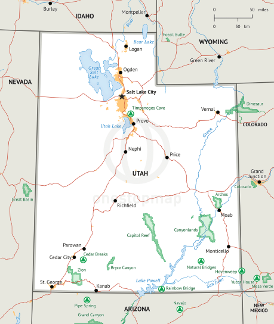

I chose these parts of the maps because I think the National Parks in Utah are an amazing part of the state. I have heard so much about them, but since I've lived here I haven't had a change to visit any yet. I also built the site as a resource for myself, hopefully having sometime this summer to visit a few of these locations!
